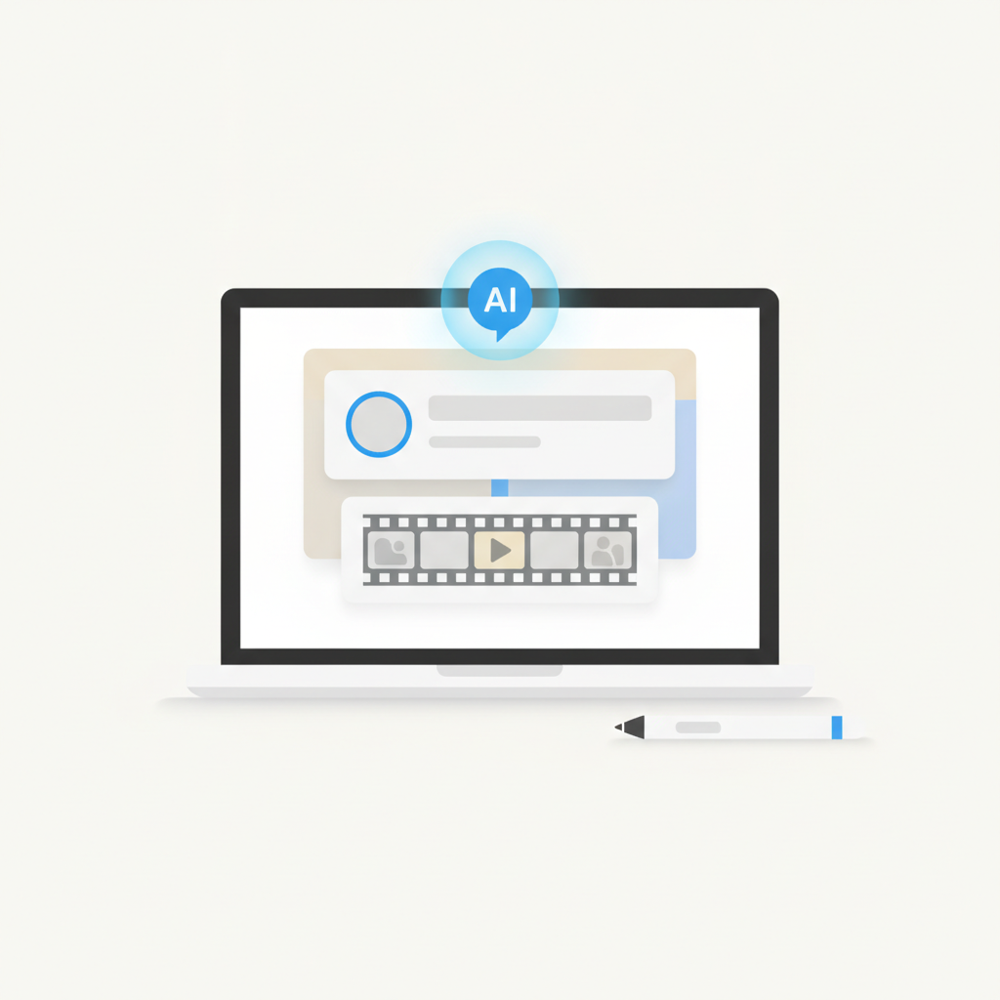
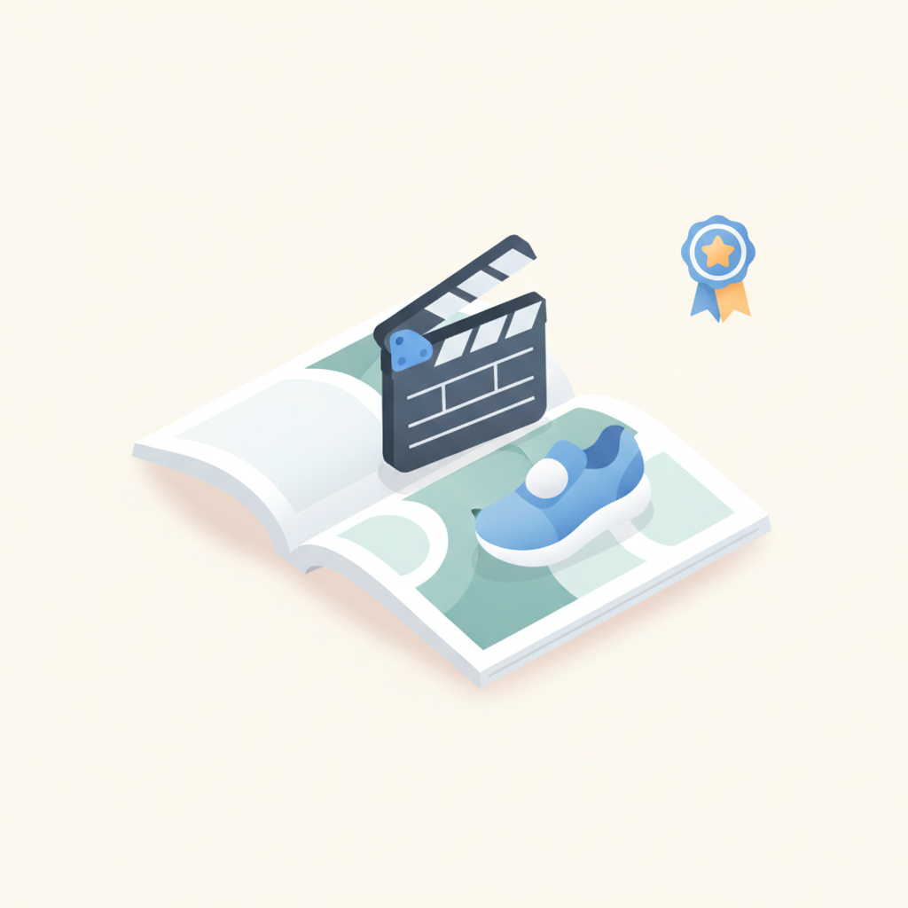
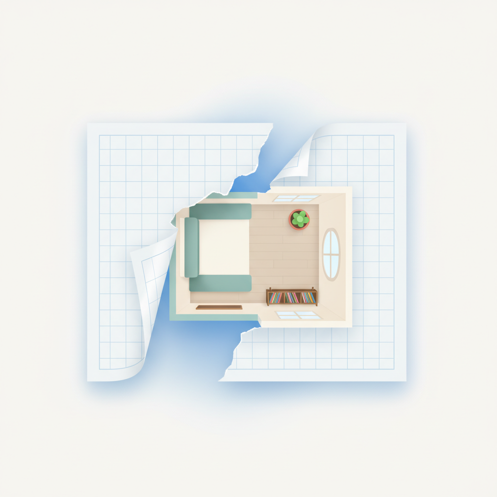
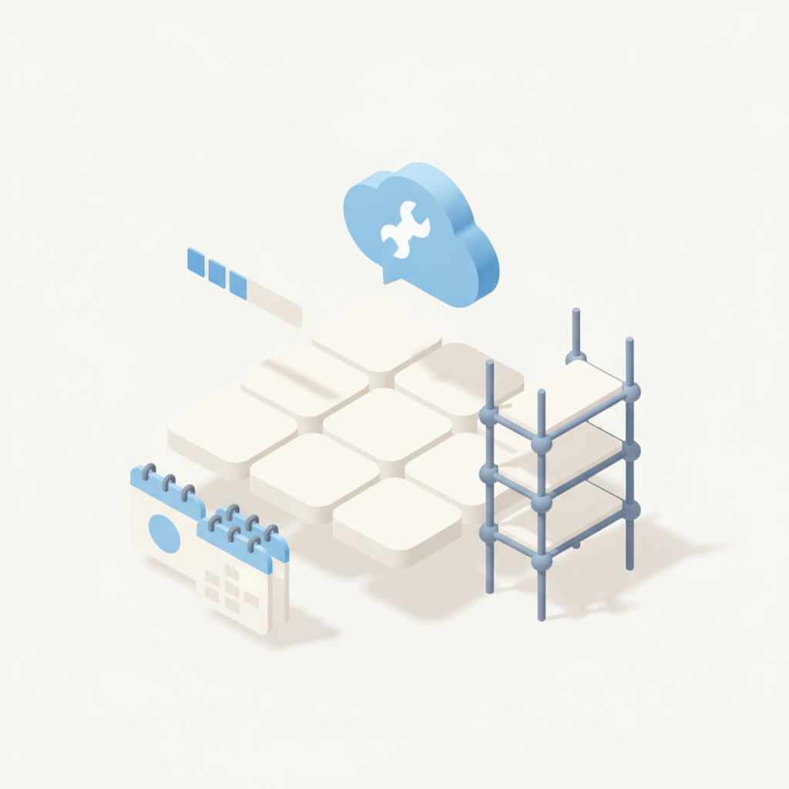
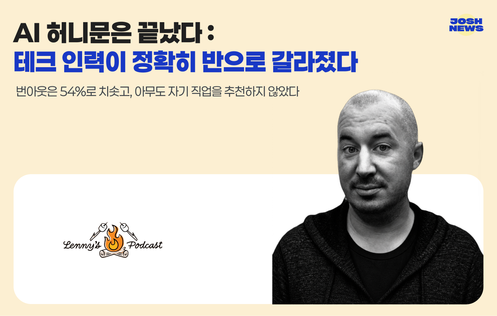
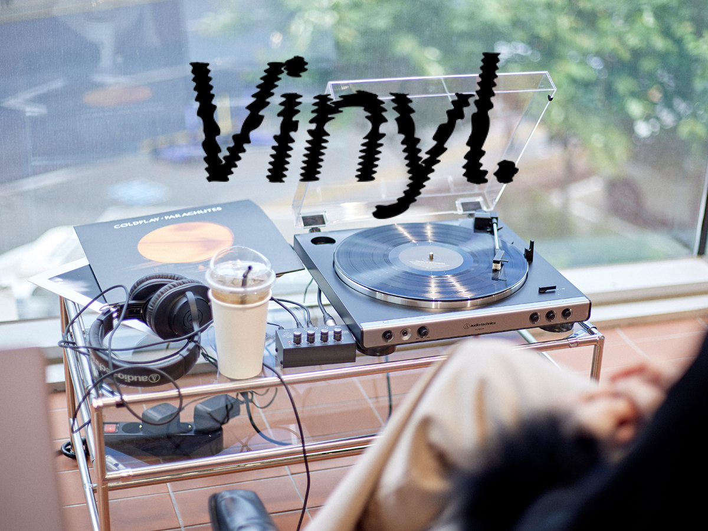

안녕하세요! 수요일 마케팅 소식 전해드립니다 😊 오늘은 AI가 실제 업무 현장을 어떻게 바꾸고 있는지를 다루는 콘텐츠들이 가득합니다. 오늘의 빌더조쉬 소식은 첫 주제부터 꽤 묵직합니다. "AI 허니문은 끝났다"는 제목 아래, 테크 업계 인력이 정확히 두 쪽으로 나뉘고 있다는 이야기입니다. 번아웃이 54%까지 치솟고 자기 직업을 추천하지 않겠다는 답변이 쏟아지는 상황은, AI 도입 이후 조직 내부에서 무슨 일이 벌어지고 있는지를 냉정하게 짚어줍니다.
한편 아임웹이 클로드를 활용해 4년 걸릴 작업을 3개월로 단축한 사례나, 크래프톤 마케터가 월 60시간짜리 반복 업무를 5시간으로 줄인 경험은 같은 AI라도 어떻게 전략적으로 끌어쓰느냐에 따라 결과가 완전히 달라진다는 것을 보여줍니다. OpenAI가 한국에서 처음 선보인 챗GPT 브랜드 캠페인 '그 모든 것에, ChatGPT' 역시, AI가 이제 기능 경쟁을 넘어 브랜드 인식 싸움 단계로 넘어왔다는 신호로 읽힙니다.
한 주의 중반, 오늘 콘텐츠들이 좋은 자극이 되시길 바랍니다! 🚀

1현대 콘텐츠 산업은 텍스트, 이미지, 영상 등 미디어 융합 트렌드와 함께 생성형 AI(Generative AI) 기술의 등장으로 격변기를 맞이하고 있다. ChatGPT, Midjourney, Stable Diffusion, Runway 등 AI 도구는 콘텐츠 생산 속도를 획기적으로 높이고 있으며, 종래에는 전문가만 가능했던 그래픽·영상 작업을 일반인도 수행할 수 있게 했다. 이에 따라 콘텐츠 제작자는 아이디어 단계부터 다양한 시안을 빠르게 검토하고, 여러 버전을 […] The post [IT 트렌드 바로읽기] AI 콘텐츠 디자이너의
› 2[ 매드타임스 채성숙 기자] 생성형 AI의 활용이 빠르게 확산되면서 저작권에 대한 우려도 커지는 가운데, 대표 스톡 콘텐츠 플랫폼 클립아트코리아의 ‘AI 스튜디오’가 저작권 인증을 받은 콘텐츠를 기반으로 AI 이미지와 영상을 제작할 수 있는 서비스로 주목받고 있다.생성형 AI는 광고·마케팅, 쇼핑몰, SNS 등 다양한 분야에서 활용되고 있다. 그러나 AI 학습에 활용된 이미지의 출처와 권리 관계를 확인하기 어렵거나, 생성된 결과물을 실제 비즈니스에 활용할 수 있는지 명확하지 않은 서비스도 있어 콘텐츠 제작 과정에서 저작권 리스크에
› 3[ 매드타임스 채성숙 기자] 오픈AI(OpenAI)가 한국에서 처음으로 챗GPT(ChatGPT) 브랜드 광고 캠페인 ‘그 모든 것에, ChatGPT’를 선보인다.이번 캠페인은 7월 22일부터 TV를 비롯해 삼성동, 강남, 광화문 등 서울 주요 지역의 대형 옥외광고와 유튜브, 넷플릭스 등 다양한 디지털 미디어를 통해 공개된다. 오픈AI가 한국 시장을 위해 처음으로 기획·제작한 챗GPT 브랜드 캠페인이다.캠페인의 핵심 메시지는 ‘그 모든 것에, ChatGPT’다. 업무나 학습을 위한 단순한 질문부터 이사와 같이 여러 선택과 준비가 필요
› 4마케팅 현장에서 매일 반복되던 데이터 수집과 전처리, 성과 분석, 리포트 작성 업무가 인공지능(AI)을 통해 자동화되고 있다. 하지만 이는 단순히 AI라는 새로운 도구를 도입하는 것이 아니다. 실제 업무의 흐름과 판단 기준을 세밀하게 들여다보고, 현업의 암묵지(학습과 경험을 통하여 개인에게 체화(體化)되어 있지만 말이나 글 등의 형식을 갖추어 표현할 수 없는 지식)를 구조화하는 한편, 조직 구성원의 동의와 지원까지 끌어내는 섬세한 과정이 필요하다.브랜드브리프는 21일 서울 강남구 웨스틴 서울 파르나스에서 열린 에이비일팔공(AB180
›
5크리에이티브 스튜디오 컴파운드 컬렉티브(Compound Collective) 전이안 감독이 기획 및 연출을 맡은 글로벌 브랜드 아식스의 프로젝트 'Asics Sportstyle 26 SS'가 글로벌 크리에이티브 레퍼런스 매체인 '뤼르처스 아카이브(Lürzer's Archive)'의 최신 233호 에디션(Issue 233) 온라인 셀렉션에 공식 등재됐다. 22일 업계에 따르면, 1984년에 시작돼 전 세계 60여 개국에서 발행되는 '뤼르처스 아카이브'는 매년 전 세계에서 공개되는 수많
›
6'아파트'라는 단어를 들었을 때 머릿속에 그려지는 풍경은 뻔하다. 무채색의 네모 반듯한 콘크리트 박스, 획일화된 평면도, 그리고 '안정적인 중산층'이라는 기성세대의 다소 지루한 성공의 공식. 하지만 성수와 연남의 골목에서 기민하게 그들만의 트렌드를 만들고, 타인의 시선보다 자기만의 확고한 취향을 수집하는 요즘의 감각적인 크리에이터나 자신만의 영역을 개척해 나가는 젊은 리더들에게 기성 아파트는 어딘가 몸에 맞지 않는 헐거운 기성복 같다.이미 사람들의 안목과 라이프스타일은 그 어느 때보다 선명해졌음에도, 대
›
7요즘 링크드인에는 "클로드로 웹사이트를 만들었다"는 글이 꽤 많다. 결제 모듈도 붙였다, 뭐도 된다더라. 그런 글을 볼 때마다 궁금했다. 그럼 노코드 웹빌더로 시작한 아임웹 같은 회사는 어떻게 되는 걸까?
›
번아웃은 54%로 치솟고, 아무도 자기 직업을 추천하지 않았다

‘LP 카페’라고 하면, 어떤 모습이 떠오르시나요? 저는 곱슬머리의 DJ가, 오래된 나무 책장 사이에서 LP* 음반을 꺼내는 모습이 생각납니다.
아티클 읽기 →브랜드 진단부터 지금 당장 해야 할 우선순위까지,
30분 무료 상담에서 함께 정리해드려요.
이미 수십 개 브랜드가 상담받았습니다.
내 브랜드처럼, 함께 고민하는 팀원의 마음으로 봅니다.
스타트업 대표·마케팅 담당자를 위한 30분